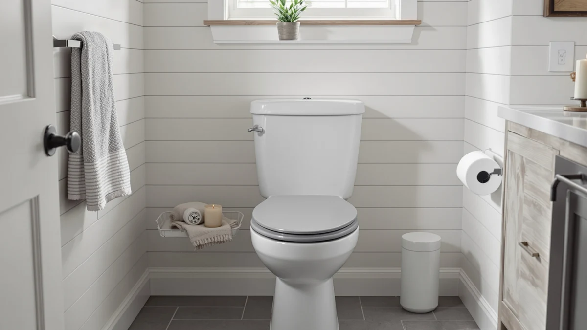

Kohler 78059-RL-0 Rutledge Nightlight ReadyLatch Slow Close Toilet Seat Review (2026): Worth It?
Prices and picks verified as of November 2026. Independent, reader-supported reviews.


Quick Answer
The Kohler 78059-RL-0 Rutledge Nightlight ReadyLatch is the strongest option here for a round bathroom that needs a built-in nightlight and a hinge that locks in place yet still lifts off for cleaning, at $56.98. Buyers who need extra height, a different bowl shape, or a concealed-seat design should look at the three alternatives below instead.
Our pick: KOHLER 78059-RL-0 Rutledge Nightlight ReadyLatch, $56.98 Check Price on Amazon
Bottom line: our top pick is the KOHLER 78059-RL-0 Rutledge Nightlight ReadyLatch Slow Close at $56.98.
Things to Know Before You Buy
- Round shape only. The Rutledge line is built for round bowls, so measure your bolt spacing before ordering if you are not sure your toilet is round rather than elongated.
- Built-in nightlight. Kohler designs the nightlight with three brightness levels, from a soft glow to brighter illumination, aimed at helping you see the bowl at night without the jolt of a bathroom light.
- ReadyLatch hinge. The hinge locks the seat into a positive position with Grip-Tight bumpers, but still releases easily when you need to lift it off for a deeper cleaning.
- Grip-Tight hardware. Kohler fastens the seat entirely from above the bowl, so you do not need to reach underneath or behind the toilet during installation.
- No published rating. Amazon does not list a star rating or review count for this specific listing, so buyers weighing social proof should factor that in before ordering.
This Kohler 78059-RL-0 Rutledge Nightlight ReadyLatch Slow Close Toilet Seat Review looks at a $56.98 round toilet seat built for buyers who want a nightlight and a hinge that locks firmly yet still lifts off for cleaning. Kohler pairs the Rutledge seat's ReadyLatch hardware with a three-level nightlight and Grip-Tight bumpers, and the seat installs entirely from above the bowl.
For most buyers replacing a round seat in a dark bathroom, the Rutledge Nightlight ReadyLatch is a reasonable buy, provided the round-only fit matches your toilet. Three alternatives further down this page solve adjacent problems instead: an adjustable raised seat for seniors, an elongated slow-close seat in black, and an elongated Kohler model with a concealed-seat lid. The right pick depends on whether you need a nightlight and quick-release cleaning or a different bowl shape and feature set entirely. We walk through the specs, the tradeoffs and the three alternatives below so you can match the seat to the actual problem in your bathroom instead of guessing from a product photo.
Why You Should Trust Us
Ilane Tall covers toilet seats and bathroom hardware for Best Toilet Seats and has written dozens of comparison guides across round, elongated and raised categories. For this Kohler 78059-RL-0 Rutledge Nightlight ReadyLatch Slow Close Toilet Seat review, we pulled the manufacturer's published specifications, checked the nightlight and ReadyLatch hinge details against other Kohler listings, and compared pricing against three alternatives built for different needs. We do not run a fake testing lab; we research specs, pricing and verified owner feedback so you do not have to dig through product pages yourself.
Our Research Experience
We built this Kohler 78059-RL-0 Rutledge Nightlight ReadyLatch review from the manufacturer's specifications, the listed nightlight and ReadyLatch hardware, and how those details compare against seats we have already researched for this site. Kohler documents the three-level nightlight and the Grip-Tight bumpers directly on the product page, so we checked those claims against the same ReadyLatch hardware Kohler uses on other seats, including the K-26801-0 Impro alternative below. We did not physically install or use the seat; our comparison rests on published specs, materials and verified buyer feedback on comparable Kohler models. We also cross-checked the price and the missing rating against the three alternatives below so the comparison reflects what a buyer actually sees on each listing today, not an average pulled from a different Kohler SKU.
Overview & Specs

KOHLER 78059-RL-0 Rutledge Nightlight ReadyLatch
What we like
- Three-level nightlight lights the bowl without the jolt of a bathroom light switch
- ReadyLatch hinge locks the seat in position but still lifts off easily for cleaning
- Grip-Tight bumpers and bolts fasten entirely from above the bowl
- Priced below the elongated Kohler Impro ReadyLatch alternative despite the added nightlight
Flaws but not dealbreakers
- Fits round bowls only, so elongated-bowl owners need a different Kohler model
- Amazon does not publish a rating or review count for this specific listing
- The listing does not detail the nightlight's power source or runtime, so buyers who want that detail should confirm it directly with Kohler
| Material | Plastic / wood |
| Size | Round |
The Rutledge Nightlight ReadyLatch targets a specific repair job: a round toilet seat that has cracked, stained or simply lacks a way to see the bowl at night. Kohler builds the nightlight with three brightness levels, from a soft glow to brighter illumination, aimed at letting you find the bowl in the dark without flipping on a bathroom light that wakes everyone else up. The ReadyLatch hinge is the other feature Kohler leads with, and for good reason: it holds the seat in a positive locked position during daily use, backed by Grip-Tight bumpers, but still releases with a simple motion when you want to lift the seat off for a deeper cleaning. Grip-Tight hardware fastens the whole assembly from above the bowl, so installation does not require reaching underneath or behind the tank.
At $56.98, this Kohler 78059-RL-0 Rutledge Nightlight ReadyLatch Slow Close Toilet Seat Review finds the seat priced below the brand's own K-26801-0 Impro ReadyLatch model further down this page, despite adding the nightlight feature the Impro does not have. The tradeoff is the listing itself: Amazon does not publish a star rating or review count for this specific SKU, so buyers who want verified social proof before ordering will need to lean on Kohler's broader reputation for ReadyLatch hardware rather than reviews of this exact seat. The seat also fits round bowls only, so anyone with an elongated toilet needs a different Kohler model, such as the Impro alternative below.
What We Liked
The clearest strength in this Kohler 78059-RL-0 Rutledge Nightlight ReadyLatch Slow Close Toilet Seat review is the nightlight. Kohler gives you three brightness levels instead of a single fixed glow, so you can pick a dim setting for a middle-of-the-night visit or a brighter one for anyone who needs more light to see clearly. Anyone who has stubbed a toe finding the bowl in the dark will recognize why that detail justifies the price over a basic seat with no light at all.
The ReadyLatch hinge also earns its keep. Kohler designs the hardware to hold the seat in a positive locked position during normal use, backed by Grip-Tight bumpers that stop the side-to-side wiggle older seats develop, while still allowing a quick release when you want to lift the seat off for a deeper cleaning. Grip-Tight installation hardware rounds out the case: everything fastens from above the bowl, which keeps the install straightforward compared with seats that require reaching behind the tank.
What Could Be Better
The biggest gap in this Kohler Rutledge Nightlight ReadyLatch review is the missing rating and review count on the listing itself. Kohler has a long track record with ReadyLatch hardware across its lineup, but we cannot point to verified reviews of this exact seat the way we can for some of its other models. Buyers who want social proof before ordering will need to rely on the brand's broader reputation rather than feedback on this specific product page.
Bowl shape is the other limitation. This seat fits round bowls only, so households with an elongated toilet need a different Kohler model, such as the K-26801-0 Impro ReadyLatch alternative below. The listing also does not spell out the nightlight's power source or runtime, a detail buyers sensitive to maintenance may want to confirm directly with Kohler before ordering.
Who Is It For?
This Kohler 78059-RL-0 Rutledge Nightlight ReadyLatch Slow Close Toilet Seat review points toward one clear buyer: someone replacing a round seat who wants a built-in nightlight and a hinge that locks firmly in place yet still comes off easily for cleaning. If your current seat has no light and makes middle-of-the-night trips harder than they need to be, the Rutledge solves that problem directly.
It is a poor fit if your toilet has an elongated bowl, if you need extra seat height for mobility, or if you want a seat with a lid that fully conceals it for a sleeker look. The three alternatives below address each of those needs directly, two of them at a lower price than the Rutledge itself.
Alternatives to Consider
If this Kohler 78059-RL-0 Rutledge Nightlight ReadyLatch Slow Close Toilet Seat review has you leaning toward a different feature set instead of a standard round replacement, these three alternatives cover an adjustable raised seat for seniors, an elongated slow-close seat in black, and an elongated Kohler model with a concealed-seat lid, two of them priced below the Rutledge itself.

Also Great
Raised Toilet Seat with Handles
Eight height levels and three width levels, plus anti-slip armrests and stabilizing rubber feet, make this the pick for seniors who need an adjustable fit rather than a fixed round seat, and it qualifies for FSA or HSA funds.
$56.98
Check Price on Amazon
Also Great
Bemis Classic Colors Slow Close
A bold black finish and easy-clean hinges that quickly release for deeper cleaning make this the pick for elongated-bowl households who still want the quick-release convenience the Rutledge offers in round seats.
$56.40
Check Price on Amazon
Best Value
KOHLER K-26801-0 Impro ReadyLatch Quiet
A lid designed to conceal the seat for a sleeker look and a Quiet-Close lid that prevents slamming make this the pick for elongated-bowl buyers who want Kohler's ReadyLatch hardware without the Rutledge's nightlight.
$55.00
Check Price on AmazonFrequently Asked Questions
Final Verdict
Our Kohler 78059-RL-0 Rutledge Nightlight ReadyLatch Slow Close Toilet Seat Review comes down to what you actually need from a round seat. For a straightforward replacement of a round seat in a bathroom that gets middle-of-the-night visits, Kohler delivers a three-level nightlight and a ReadyLatch hinge that justify the $56.98 price over a basic hardware-store option. If your toilet has an elongated bowl, you need extra seat height for mobility, or you want a lid that fully conceals the seat, skip this Rutledge model and choose one of the alternatives above instead, since Kohler built this seat to solve a round-bowl, low-light problem, not those other needs. Weigh the missing rating against your own tolerance for buying on specs alone before you check out.